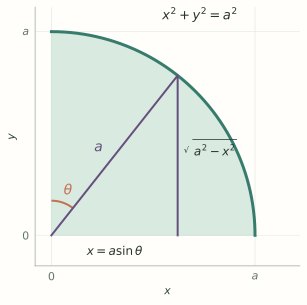

MA1508 Calculus · Chapter 5 · Section 5.7
Additional Techniques of Integration
For each problem: recognize the form, choose a technique, and follow a worked example.
Stewart, Single Variable Calculus: Concepts and Contexts, 4th edition, §5.7, starting on printed p. 389.
1. How do we integrate products of sine and cosine?
Problem. The integrand contains powers of trigonometric functions, for example
A power is repeated multiplication: \(\sin^3x=(\sin x)^3\) and \(\cos^2x=(\cos x)^2\). It does not mean \(\sin(x^3)\) or \(\cos(x^2)\). More generally, \(\sin^m x\cos^n x\) means \((\sin x)^m(\cos x)^n\), with nonnegative integer exponents.
Technique. Use \(\sin^2x+\cos^2x=1\) to create a factor matching a substitution. Choose the case by looking at the exponents.
Case A: the cosine power is odd
Problem: an integral such as \(\int\cos^3x\,dx\), or \(\int\sin^m x\cos^{2k+1}x\,dx\).
Technique: save one \(\cos x\,dx\), and turn the rest into powers of \(\sin x\):
Example.
Find \(\int\sin^2x\cos^3x\,dx\).
Show answerHide answer
- Write \(\sin^2x\cos^3x=\sin^2x(1-\sin^2x)\cos x\).
- Let \(u=\sin x\), so \(du=\cos x\,dx\). The integral is \(\int(u^2-u^4)\,du=u^3/3-u^5/5+C\).
- Return to \(x\).
Case B: the sine power is odd
Problem: an integral such as \(\int\sin^3x\cos^2x\,dx\).
Technique: save one \(\sin x\,dx\), and turn the rest into powers of \(\cos x\):
Example. See how the saved factor and the minus sign are used:
Find \(\int\sin^3x\cos^2x\,dx\).
Show answerHide answer
- Save one sine factor: \(\sin^3x\cos^2x=(1-\cos^2x)\cos^2x\sin x\).
- Let \(u=\cos x\), \(du=-\sin x\,dx\). Then \[\int\sin^3x\cos^2x\,dx=-\int(u^2-u^4)\,du=-\frac{u^3}{3}+\frac{u^5}{5}+C.\]
- Return to \(x\) and differentiate to check.
Case C: both powers are even
Problem: an integral such as \(\int\sin^2x\,dx\), with no single sine or cosine factor to save.
Technique: lower the powers using the half-angle identities:
Examples. The first uses Case A; the second uses Case C.
Find \(\int\cos^3x\,dx\) and \(\int\sin^2x\,dx\).
Show answerHide answer
- For the first, write \(\cos^3x=(1-\sin^2x)\cos x\). With \(u=\sin x\), integrate \(1-u^2\).
- For the second, use \(\sin^2x=(1-\cos2x)/2\). Integrate each term.
If both exponents are odd, either Case A or Case B is available.
2. How do we integrate products of tangent and secant?
Problem. The integrand contains \(\tan^m x\sec^n x\), for instance \(\int\tan^2x\sec^4x\,dx\). Work on an interval where \(\cos x\ne0\).
Technique. Use \(1+\tan^2x=\sec^2x\), and save a factor that is a known derivative:
Case A: an even secant power
Problem: \(\int\tan^2x\sec^4x\,dx\).
Technique: save \(\sec^2x\,dx\), rewrite the remaining \(\sec^2x\), then use \(u=\tan x\):
Example.
Find \(\int\tan^2x\sec^4x\,dx\).
Show answerHide answer
- Save \(\sec^2x\,dx\) and rewrite the other factor: \(\tan^2x\sec^4x=\tan^2x(1+\tan^2x)\sec^2x\).
- With \(u=\tan x\), the integral is \(\int(u^2+u^4)\,du=u^3/3+u^5/5+C\).
Case B: an odd tangent power and a secant factor
Problem: \(\int\sec^3x\tan x\,dx\).
Technique: save \(\sec x\tan x\,dx\), rewrite any remaining even tangent powers using \(\tan^2x=\sec^2x-1\), and use \(u=\sec x\).
Example.
Find \(\int\sec^3x\tan x\,dx\), on an interval where \(\cos x\ne0\).
Show answerHide answer
- Write \(\sec^3x\tan x\,dx=\sec^2x(\sec x\tan x\,dx)\).
- Let \(u=\sec x\), \(du=\sec x\tan x\,dx\). Then \(\int u^2du=u^3/3+C\).
3. What if the integrand contains a square root?
Problem. A radical such as \(\sqrt{a^2-x^2}\), \(\sqrt{a^2+x^2}\), or \(\sqrt{x^2-a^2}\) remains after simpler algebra or substitution. Assume \(a>0\).
Look first. Which side of this triangle is \(\sqrt{a^2-x^2}\), and which angle could describe it?

Technique. Choose a trigonometric substitution that turns the expression inside the square root into a square. Select an interval for \(\theta\) so its sign is known.
Case A: \(\sqrt{a^2-x^2}\)
Why? The identity \(1-\sin^2\theta=\cos^2\theta\), together with \(\cos\theta\ge0\) on this interval.
Examples.
Use integration to find the area of a circle of radius \(a>0\).
Show answerHide answer
- By symmetry, area is \(4\int_0^a\sqrt{a^2-x^2}\,dx\). Put \(x=a\sin\theta\), with \(0\le\theta\le\pi/2\).
- Then \(dx=a\cos\theta d\theta\) and \(\sqrt{a^2-x^2}=a\cos\theta\), since \(\cos\theta\ge0\).
- Area is \(4a^2\int_0^{\pi/2}\cos^2\theta d\theta=4a^2[\theta/2+\sin2\theta/4]_0^{\pi/2}=\pi a^2\).
Evaluate \(\int_0^1\sqrt{4-x^2}\,dx\).
Show answerHide answer
- Put \(x=2\sin\theta\). When \(x=0\), \(\theta=0\); when \(x=1\), \(\theta=\pi/6\).
- Thus \(dx=2\cos\theta\,d\theta\) and the radical is \(2\cos\theta\). The integral becomes \(4\int_0^{\pi/6}\cos^2\theta\,d\theta\).
- Use the half-angle identity: \(4[\theta/2+\sin(2\theta)/4]_0^{\pi/6}=\pi/3+\sqrt3/2\).
Case B: \(\sqrt{a^2+x^2}\)
Why? Use \(1+\tan^2\theta=\sec^2\theta\) and \(\sec\theta>0\) on this interval. The next example shows the same substitution with a related quadratic denominator.
Example.
Find \(\int dx/(a^2+x^2)\), where \(a>0\), using \(x=a\tan\theta\).
Show answerHide answer
- With \(dx=a\sec^2\theta\,d\theta\) and \(a^2+x^2=a^2\sec^2\theta\), the integral becomes \(a^{-1}\int d\theta\).
- Choose \(-\pi/2<\theta<\pi/2\), so \(\theta=\arctan(x/a)\).
Case C: \(\sqrt{x^2-a^2}\)
For \(x\ge a\), take \(0\le\theta<\pi/2\); for \(x\le-a\), take \(\pi/2<\theta\le\pi\). The absolute value matters because the sign of \(\tan\theta\) changes between these branches.
Example.
Find \(\int dx/[x\sqrt{x^2-a^2}]\) for \(x>a>0\).
Show answerHide answer
- Let \(x=a\sec\theta\), \(0<\theta<\pi/2\). Then \(dx=a\sec\theta\tan\theta\,d\theta\) and \(\sqrt{x^2-a^2}=a\tan\theta\).
- The integral is \(a^{-1}\int d\theta=\theta/a+C\). Since \(\cos\theta=a/x\), return to \(x\) with \(\theta=\arccos(a/x)\).
4. How do we integrate a quotient of polynomials?
Problem. A rational function has the form \(P(x)/Q(x)\), for example \(1/[(x+1)(x+2)]\).
Technique. First divide if the numerator degree is at least the denominator degree. Then factor the denominator and split the remainder into simpler fractions.
Step 1: divide when necessary
Example.
Find \(\int x^2/(x+1)\,dx\).
Show answerHide answer
- Long division gives \(x^2/(x+1)=x-1+1/(x+1)\).
- Integrate term by term, on an interval excluding \(x=-1\).
Step 2: distinct linear factors
Problem: the denominator contains \((x-r)(x-s)\), with \(r\ne s\).
Technique: use one fraction for each factor, clear denominators and solve for the constants:
Example.
Find \(\int1/[(x+1)(x+2)]\,dx\), away from the poles.
Show answerHide answer
- Write \(1/[(x+1)(x+2)]=A/(x+1)+B/(x+2)\). Multiplication gives \(1=A(x+2)+B(x+1)\).
- At \(x=-1\), \(A=1\); at \(x=-2\), \(B=-1\).
- Integrate the two fractions. The logarithmic expression is valid on each interval that excludes the poles.
Step 3: how do we split a fraction with a repeated factor?
Problem. Evaluate \(\displaystyle\int\frac{dx}{x(x+1)^2}\). We want to split the integrand into simpler fractions whose antiderivatives we know. Since \(x+1\) occurs twice, is one term with denominator \((x+1)^2\) enough?
Why the shorter split fails. If we try only \(A/x+B/(x+1)^2\), clearing denominators would require
The constant terms require \(A=1\), but the \(x^2\) terms require \(A=0\). No choice of \(A,B\) can make this an identity. We also need a term with denominator \(x+1\):
Technique. In a partial-fraction decomposition, a repeated factor \((x-r)^m\) contributes
Allow every power, then solve for the constants; some may be zero. Each term can be integrated using a logarithm or the power rule.
Example.
Find \(\int dx/[x(x+1)^2]\), on an interval avoiding \(0\) and \(-1\).
Show answerHide answer
- Set \(1/[x(x+1)^2]=A/x+B/(x+1)+C/(x+1)^2\). Multiplying through gives \(1=A(x+1)^2+Bx(x+1)+Cx\).
- At \(x=0\), \(A=1\); at \(x=-1\), \(C=-1\). Comparing the \(x^2\) coefficients gives \(B=-1\).
- Integrate \(1/x-1/(x+1)-1/(x+1)^2\) term by term.
Step 4: how do we integrate when a quadratic will not factor?
Problem. Evaluate \(\displaystyle\int\frac{x+2}{x^2+1}\,dx\). The denominator \(x^2+1\) has no real linear factors, so we cannot split it using the preceding linear-factor forms.
Why a linear numerator? A remainder over a quadratic can contain both an \(x\) term and a constant. A constant numerator alone cannot match \(x+2\). Allow the general numerator of degree below 2: \(Bx+C\).
Technique. Split the numerator into a multiple of the denominator's derivative plus a constant. For
the condition \(p^2-4q<0\) ensures that \(Q\) has no real linear factors. Now
The two pieces give a logarithm and an arctangent:
Example. Apply this split to the original problem.
Find \(\int(x+2)/(x^2+1)\,dx\).
Show answerHide answer
- Split the numerator: \(x/(x^2+1)+2/(x^2+1)\).
- The first term uses \(u=x^2+1\) and gives \(\tfrac12\ln(x^2+1)\). The second gives \(2\arctan x\).
General partial-fraction form. For a repeated irreducible quadratic factor \(Q(x)^m\), allow a linear numerator over each power, then solve for the coefficients:
In every case, integrate on intervals where the original denominator is nonzero.